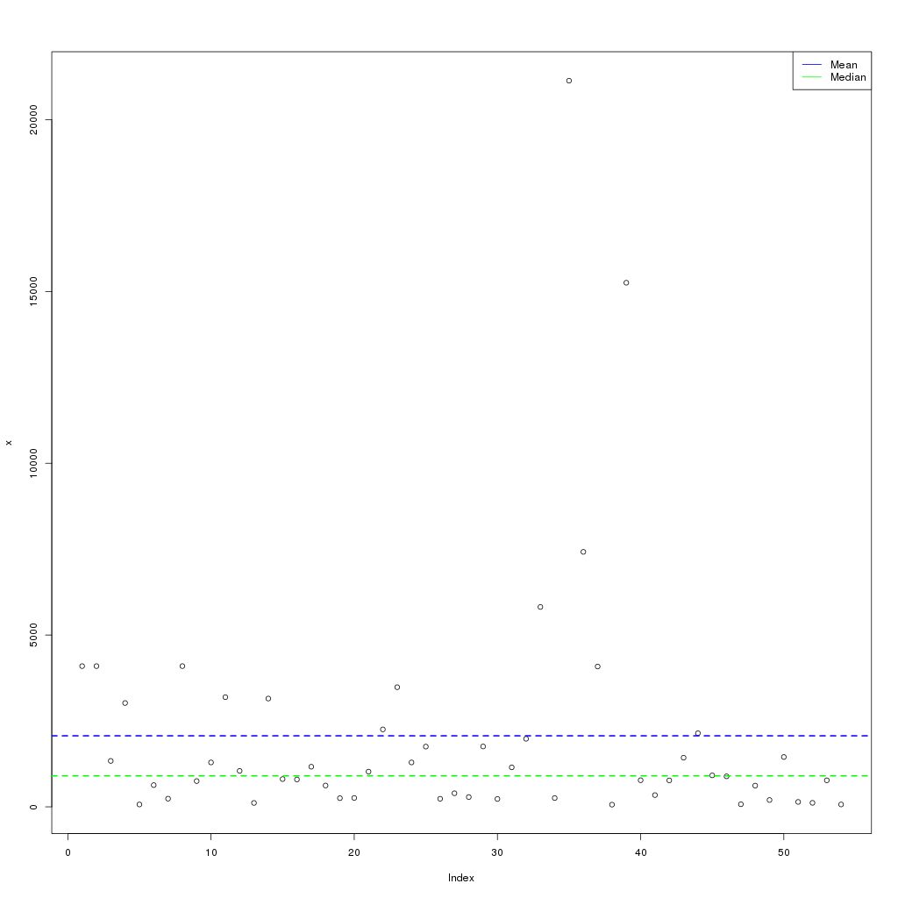

Commands and utilities
SnpEff provides several other commands and utilities that can be useful for genomic data analysis.
Most of this manual was dedicated the SnpEff eff and SnpEff build commands, which annotate effects and build databases respectively.
Here we describe all the other commands and some scripts provided, that are useful for genomic data analysis.
SnpEff closest
Annotates using the closest genomic region (e.g. exon, transcript ID, gene name) and distance in bases.
Example:
$ java -Xmx8g -jar snpEff.jar closest GRCh37.66 test.vcf
##INFO=<ID=CLOSEST,Number=4,Type=String,Description="Closest exon: Distance (bases), exons Id, transcript Id, gene name">
1 12078 . G A 25.69 PASS AC=2;AF=0.048;CLOSEST=0,exon_1_11869_12227,ENST00000456328,DDX11L1
1 16097 . T G 42.42 PASS AC=9;AF=0.0113;CLOSEST=150,exon_1_15796_15947,ENST00000423562,WASH7P
1 40261 . C A 366.26 PASS AC=30;AF=0.484;CLOSEST=4180,exon_1_35721_36081,ENST00000417324,FAM138A
1 63880 . C T 82.13 PASS AC=10;AF=0.0400;CLOSEST=0,exon_1_62948_63887,ENST00000492842,OR4G11P
For instance, in the third line (1:16097 T G), it added the tag CLOSEST=150,exon_1_15796_15947,ENST00000423562,WASH7P
, which means that the variant is 150 bases away from exon "exon_1_15796_15947".
The exon belongs to transcript "ENST00000423562" of gene "WASH7P".
Info
If multiple markers are available (at the same distance) the one belonging to the longest mRna transcript is shown.
The input can also be a BED file, the output file has the same information as CLOSEST info field, added to the fourth column of the output BED file:
$ snpeff closest -bed GRCh37.66 test.bed
1 12077 12078 line_1;0,exon_1_11869_12227,ENST00000456328,DDX11L1
1 16096 16097 line_2;150,exon_1_15796_15947,ENST00000423562,WASH7P
1 40260 40261 line_3;4180,exon_1_35721_36081,ENST00000417324,FAM138A
1 63879 63880 line_4;0,exon_1_62948_63887,ENST00000492842,OR4G11P
SnpEff count
As the name suggests, snpEff count command counts how many reads and bases from a BAM file hit a gene, transcript, exon, intron, etc.
Input files can be in BAM, SAM, VCF, BED or BigBed formats.
A summary HTML file with charts is generated. Here are some examples:


If you need to count how many reads (and bases) from a BAM file hit each genomic region, you can use 'count' utility.
The command line is quite simple. E.g. in order to count how many reads (from N BAM files) hit regions of the human genome, you simply run:
java -Xmx8g -jar snpEff.jar count GRCh37.68 readsFile_1.bam readsFile_2.bam ... readsFile_N.bam > countReads.txt
The output is a TXT (tab-separated) file, that looks like this:
chr start end type IDs Reads:readsFile_1.bam Bases:readsFile_1.bam Reads:readsFile_2.bam Bases:readsFile_2.bam ...
1 1 11873 Intergenic DDX11L1 130 6631 50 2544
1 1 249250621 Chromosome 1 2527754 251120400 2969569 328173439
1 6874 11873 Upstream NR_046018;DDX11L1 130 6631 50 2544
1 9362 14361 Downstream NR_024540;WASH7P 243 13702 182 9279
1 11874 12227 Exon exon_1;NR_046018;DDX11L1 4 116 2 102
1 11874 14408 Gene DDX11L1 114 7121 135 6792
1 11874 14408 Transcript NR_046018;DDX11L1 114 7121 135 6792
1 12228 12229 SpliceSiteDonor exon_1;NR_046018;DDX11L1 3 6 0 0
1 12228 12612 Intron intron_1;NR_046018;DDX11L1 13 649 0 0
1 12611 12612 SpliceSiteAcceptor exon_2;NR_046018;DDX11L1 0 0 0 0
1 12613 12721 Exon exon_2;NR_046018;DDX11L1 3 24 1 51
1 12722 12723 SpliceSiteDonor exon_2;NR_046018;DDX11L1 3 6 0 0
1 12722 13220 Intron intron_2;NR_046018;DDX11L1 22 2110 20 987
1 13219 13220 SpliceSiteAcceptor exon_3;NR_046018;DDX11L1 5 10 1 2
1 13221 14408 Exon exon_3;NR_046018;DDX11L1 82 4222 113 5652
1 14362 14829 Exon exon_11;NR_024540;WASH7P 37 1830 7 357
1 14362 29370 Transcript NR_024540;WASH7P 704 37262 524 34377
1 14362 29370 Gene WASH7P 704 37262 524 34377
1 14409 19408 Downstream NR_046018;DDX11L1 122 7633 39 4254
- Column 1: Chromosome name
- Column 2: Genomic region start
- Column 3: Genomic region end
- Column 4: Genomic region type (e.g. Exon, Gene, SpliceSiteDonor, etc.)
- Column 5: ID (e.g. exon ID ; transcript ID; gene ID)
- Column 6: Count of reads (in file readsFile_1.bam) intersecting genomic region.
- Column 7: Count of bases (in file readsFile_1.bam) intersecting genomic region, i.e. each read is intersected and the resulting number of bases added.
- Column ...: (repeat count reads and bases for each BAM file provided)
Totals and Binomial model
Using command line option -p, you can calculate p-values based on a Binomial model.
For example (output edited for the sake of brevity):
$ java -Xmx8g -jar snpEff.jar count -v BDGP5.69 fly.bam > countReads.txt
00:00:00.000 Reading configuration file 'snpEff.config'
...
00:00:12.148 Calculating probability model for read length 50
...
type p.binomial reads.fly expected.fly pvalue.fly
Chromosome 1.0 205215 205215 1.0
Downstream 0.29531659795589793 59082 60603 1.0
Exon 0.2030262729897713 53461 41664 0.0
Gene 0.49282883664487515 110475 101136 0.0
Intergenic 0.33995644860241336 54081 69764 0.9999999963234701
Intron 0.3431415343615103 72308 70418 9.06236369003514E-19
RareAminoAcid 9.245222303207472E-7 3 0 9.879186871519377E-4
SpliceSiteAcceptor 0.014623209601955131 3142 3001 0.005099810118785825
SpliceSiteDonor 0.015279075154423956 2998 3135 0.9937690786738507
Transcript 0.49282883664487515 110475 101136 0.0
Upstream 0.31499087549896493 64181 64641 0.9856950416729887
Utr3prime 0.03495370828296416 8850 7173 1.1734134297889064E-84
Utr5prime 0.02765432673262785 8146 5675 7.908406840800345E-215
The columns in for this table are (in the previous example the input file was 'fly.bam' so fileName is 'fly'):
- type : Type of interval
- p.binomial : Probability that a random read hits this 'type' of interval (in binomial model)
- reads.fileName : Total number of reads in 'fileName' (user provided BAM/SAM file)
- expected.fileName : Expected number of reads hitting this 'type' of interval (for user provided BAM/SAM file)
- pvalue.fileName : p-value that 'reads.fileName' reads or more hit this 'type' of interval (for user provided BAM/SAM file)
- Column ...: (repeat last three column for each BAM/SAM file provided by the user)
User defined intervals
You can add user defined intervals using -i file.bed command line option.
The option can be used multiple times, thus allowing multiple BED files to be added.
Example : You want to know how many reads intersect each peak from a peak detection algorithm:
java -Xmx8g -jar snpEff.jar count -i peaks.bed GRCh37.68 reads.bam
SnpEff databases
This command provides a list of configured databases, i.e. available in snpEff.config file.
Example:
$ java -jar snpEff.jar databases
Genome Organism Status Bundle Database download link
------ -------- ------ ------ ----------------------
129S1_SvImJ_v1.99 Mus_musculus_129s1svimj https://snpeff.blob.core.windows.net/databases/v5_0/snpEff_v5_0_129S1_SvImJ_v1.99.zip
AIIM_Pcri_1.0.99 Pavo_cristatus https://snpeff.blob.core.windows.net/databases/v5_0/snpEff_v5_0_AIIM_Pcri_1.0.99.zip
AKR_J_v1.99 Mus_musculus_akrj https://snpeff.blob.core.windows.net/databases/v5_0/snpEff_v5_0_AKR_J_v1.99.zip
AP006557.1 SARS coronavirus TWH genomic RNA, complete genome. https://snpeff.blob.core.windows.net/databases/v5_0/snpEff_v5_0_AP006557.1.zip
AP006558.1 SARS coronavirus TWJ genomic RNA, complete genome. https://snpeff.blob.core.windows.net/databases/v5_0/snpEff_v5_0_AP006558.1.zip
AP006559.1 SARS coronavirus TWK genomic RNA, complete genome. https://snpeff.blob.core.windows.net/databases/v5_0/snpEff_v5_0_AP006559.1.zip
AP006560.1 SARS coronavirus TWS genomic RNA, complete genome. https://snpeff.blob.core.windows.net/databases/v5_0/snpEff_v5_0_AP006560.1.zip
AP006561.1 SARS coronavirus TWY genomic RNA, complete genome. https://snpeff.blob.core.windows.net/databases/v5_0/snpEff_v5_0_AP006561.1.zip
...
SnpEff download
This command downloads and installs a database.
Warning
Note that the database must be configured in snpEff.config and available at the download site.
Example: Download and install C.Elegans genome:
$ java -jar snpEff.jar download -v WBcel215.69
00:00:00.000 Downloading database for 'WBcel215.69'
00:00:00.002 Connecting to http://downloads.sourceforge.net/project/snpeff/databases/v3_1/snpEff_v3_1_WBcel215.69.zip
00:00:00.547 Copying file (type: application/zip, modified on: Sat Dec 01 20:59:55 EST 2012)
00:00:00.547 Local file name: 'snpEff_v3_1_WBcel215.69.zip'
00:00:01.949 Downloaded 1049506 bytes
00:00:03.624 Downloaded 2135266 bytes
00:00:05.067 Downloaded 3185026 bytes
00:00:06.472 Downloaded 4234786 bytes
00:00:07.877 Downloaded 5284546 bytes
00:00:09.580 Downloaded 6374626 bytes
00:00:11.005 Downloaded 7424386 bytes
00:00:12.410 Downloaded 8474146 bytes
00:00:13.815 Downloaded 9523906 bytes
00:00:15.358 Downloaded 10604226 bytes
00:00:16.761 Downloaded 11653666 bytes
00:00:18.168 Downloaded 12703426 bytes
00:00:19.573 Downloaded 13753186 bytes
00:00:21.198 Downloaded 14837506 bytes
00:00:22.624 Downloaded 15887266 bytes
00:00:24.029 Downloaded 16937026 bytes
00:00:25.434 Downloaded 17986786 bytes
00:00:26.864 Downloaded 19036546 bytes
00:00:28.269 Downloaded 20086306 bytes
00:00:29.155 Donwload finished. Total 20748168 bytes.
00:00:29.156 Local file name: '/home/pcingola//snpEff/data/WBcel215.69/snpEffectPredictor.bin'
00:00:29.156 Extracting file 'data/WBcel215.69/snpEffectPredictor.bin' to '/home/pcingola//snpEff/data/WBcel215.69/snpEffectPredictor.bin'
00:00:29.157 Creating local directory: '/home/pcingola/snpEff/data/WBcel215.69'
00:00:29.424 Unzip: OK
00:00:29.424 Done
SnpEff dump
Dump the contents of a database to a text file, a BED file or a tab separated TXT file (that can be loaded into R).
BED file example:
$ java -jar snpEff.jar download -v GRCh37.70
$ java -Xmx8g -jar snpEff.jar dump -v -bed GRCh37.70 > GRCh37.70.bed
00:00:00.000 Reading database for genome 'GRCh37.70' (this might take a while)
00:00:32.476 done
00:00:32.477 Building interval forest
00:00:45.928 Done.
The output file looks like a typical BED file (chr \t start \t end \t name).
Warning
Keep in mind that BED file coordinates are zero based, semi-open intervals.
So a 2 base interval at (one-based) positions 100 and 101 is expressed as a BED interval [99 - 101].
$ head GRCh37.70.bed
1 0 249250621 Chromosome_1
1 111833483 111863188 Gene_ENSG00000134216
1 111853089 111863002 Transcript_ENST00000489524
1 111861741 111861861 Cds_CDS_1_111861742_111861861
1 111861948 111862090 Cds_CDS_1_111861949_111862090
1 111860607 111860731 Cds_CDS_1_111860608_111860731
1 111861114 111861300 Cds_CDS_1_111861115_111861300
1 111860305 111860427 Cds_CDS_1_111860306_111860427
1 111862834 111863002 Cds_CDS_1_111862835_111863002
1 111853089 111853114 Utr5prime_exon_1_111853090_111853114
TXT file example:
$ java -Xmx8g -jar snpEff.jar dump -v -txt GRCh37.70 > GRCh37.70.txt
00:00:00.000 Reading database for genome 'GRCh37.70' (this might take a while)
00:00:31.961 done
00:00:31.962 Building interval forest
00:00:45.467 Done.
$ head GRCh37.70.txt
chr start end strand type id geneName geneId numberOfTranscripts canonicalTranscriptLength transcriptId cdsLength numerOfExons exonRank exonSpliceType
1 1 249250622 +1 Chromosome 1
1 111833484 111863189 +1 Gene ENSG00000134216 CHIA ENSG00000134216 10 1431
1 111853090 111863003 +1 Transcript ENST00000489524 CHIA ENSG00000134216 10 1431 ENST00000489524 862 9
1 111861742 111861862 +1 Cds CDS_1_111861742_111861861 CHIA ENSG00000134216 10 1431 ENST00000489524 862 9
1 111861949 111862091 +1 Cds CDS_1_111861949_111862090 CHIA ENSG00000134216 10 1431 ENST00000489524 862 9
1 111853090 111853115 +1 Utr5prime exon_1_111853090_111853114 CHIA ENSG00000134216 10 1431 ENST00000489524 862 9 1 ALTTENATIVE_3SS
1 111854311 111854341 +1 Utr5prime exon_1_111854311_111854340 CHIA ENSG00000134216 10 1431 ENST00000489524 862 9 2 SKIPPED
1 111860608 111860732 +1 Exon exon_1_111860608_111860731 CHIA ENSG00000134216 10 1431 ENST00000489524 862 9 5 RETAINED
1 111853090 111853115 +1 Exon exon_1_111853090_111853114 CHIA ENSG00000134216 10 1431 ENST00000489524 862 9 1 ALTTENATIVE_3SS
1 111861742 111861862 +1 Exon exon_1_111861742_111861861 CHIA ENSG00000134216 10 1431 ENST00000489524 862 9 7 RETAINED
The format is:
| Column | Meaning |
|---|---|
| chr | Chromosome name |
| start | Marker start (one-based coordinate) |
| end | Marker end (one-based coordinate) |
| strand | Strand (positive or negative) |
| type | Type of marker (e.g. exon, transcript, etc.) |
| id | ID. E.g. if it's a Gene, then it may be ENSEBML's gene ID |
| geneName | Gene name, if marker is within a gene (exon, transcript, UTR, etc.), empty otherwise (e.g. intergenic) |
| geneId | Gene is, if marker is within a gene |
| numberOfTranscripts | Number of transcripts in the gene |
| canonicalTranscriptLength | CDS length of canonical transcript |
| transcriptId | Transcript ID, if marker is within a transcript |
| cdsLength | CDS length of the transcript |
| numerOfExons | Number of exons in this transcript |
| exonRank | Exon rank, if marker is an exon |
| exonSpliceType | Exon splice type, if marker is an exon |
SnpEff genes2bed
Dumps a selected set of genes as BED intervals.
Warning
The functionality of this command is a subset of SnpEff dump, so it is likely to be deprecated in the future.
Example:
$ java -Xmx8g -jar snpEff.jar genes2bed GRCh37.66 DDX11L1 WASH7P
#chr start end geneName;geneId
1 11868 14411 DDX11L1;ENSG00000223972
1 14362 29805 WASH7P;ENSG00000227232
SnpEff cds & SnpEff protein
These commands perform SnpEff database sanity checks. They calculate CDS and protein sequences from a SnpEff database and then compare the results to a FASTA file (having the "correct" sequences).
The commands are invoked automatically when building databases, so there is no need for the user to invoke them manually.
SnpEff len
Calculates the genomic length of every type of marker (Gene, Exon, Utr, etc.). Length is calculated by overlapping all markers and counting the number of bases (e.g. a base is counted as 'Exon' if any exon falls onto that base). This command also reports the probability of a Binomial model.
Info
Parameter -r num adjusts the model for a read length of 'num' bases. That is, if two markers of the same type are closer than 'num' bases, it joins them by inclining the bases separating them.
E.g.:
$ java -Xmx1g -jar snpEff.jar len -r 100 BDGP5.69
marker size count raw_size raw_count binomial_p
Cds 22767006 56955 45406378 122117 0.13492635563570918
Chromosome 168736537 15 168736537 15 1.0
Downstream 49570138 5373 254095562 50830 0.29377240330587084
Exon 31275946 61419 63230008 138474 0.18535372691689175
Gene 82599213 11659 87017182 15222 0.4895158717166277
Intergenic 56792611 11637 56792611 11650 0.3365756581812509
Intron 55813748 42701 168836797 113059 0.33077452573297744
SpliceSiteAcceptor 97977 48983 226118 113059 5.806507691929223E-4
SpliceSiteDonor 101996 50981 226118 113059 6.044689657225808E-4
Transcript 82599213 11659 232066805 25415 0.4895158717166277
Upstream 52874082 5658 254044876 50830 0.3133528928592389
Utr3prime 5264120 13087 10828991 24324 0.031197274126824114
Utr5prime 3729197 19324 6368070 33755 0.02210070839607192
- marker : Type of marker interval
- size : Size of all intervals in the genome, after overlap and join.
- count : Number of intervals in the genome, after overlap and join.
- raw_size : Size of all intervals in the genome. Note that this could be larger than the genome.
- raw_count : Number of intervals in the genome.
Scripts
Several scripts are provided in the scripts directory.
Here we briefly describe their functionality:
sam2fastq.pl
Convert a SAM input to a FASTQ output. Example:
samtools view test.bam | ./scripts/bam2fastq.pl | head -n 12
@HWI-ST1220:76:D12CHACXX:7:2207:18986:95756
CGACAATGCACGACAGAGGAAGCAGAACAGATATTTAGATTGCCTCTCATT
+
CCCFFFFFGHHHHIIJIJJIJIJJIJJIIIJIIHIJJJIJJIJJJJJJIJJ
@HWI-ST1220:76:D12CHACXX:7:2206:4721:162268
ATATTATAGGGAGAAATATGATCGCGTATGCGAGAGTAGTGCCAACATATT
+
@@@DDD>DAB;?DGGEGGBCD>BFGI?FCFFBFGG@<?B*?BFB9FGII@E
@HWI-ST1220:76:D12CHACXX:7:1304:13069:17740
ATAGGGAGAAATATGATCGCGTATGCGAGAGTAGTGCCAACATATTGTGCT
+
CCCFFFFFHHHHHJJJJJJJJGIJJJJJJAGBGGIIIJJJJJJJJJJJIJG
fasta2tab.pl
Convert a fasta file to a two column tab-separated TXT file (name \t sequence)
Example (output truncated for brevity):
$ zcat ce6.fa.gz | ./scripts/fasta2tab.pl
chrI gcctaagcctaagcctaagcctaagcctaagcctaagcctaagcct...
chrV GAATTcctaagcctaagcctaagcctaagcctaagcctaagcctaa...
chrII cctaagcctaagcctaagcctaagcctaagcctaagcctaagccta...
chrM CAGTAAATAGTTTAATAAAAATATAGCATTTGGGTTGCTAAGATAT...
chrX ctaagcctaagcctaagcctaagcctaagcctaagcctaagcctaa...
chrIV cctaagcctaagcctaagcctaagcctaagcctaagcctaagccta...
chrIII cctaagcctaagcctaagcctaagcctaagcctaagcctaagccta...
fastaSplit.pl
Split a multiple sequence FASTA file to individual files.
Example: Creates one file per chromosome:
$ zcat ce6.fa.gz | ./scripts/fastaSplit.pl
Writing to chrI.fa
Writing to chrV.fa
Writing to chrII.fa
Writing to chrM.fa
Writing to chrX.fa
Writing to chrIV.fa
Writing to chrIII.fa
plotHistogram.pl
Given a list of numbers (one per line), shows a histogram. Note: It requires R.
Example: Extract the file sizes in a directory and show a histogram
$ ls -al scripts/ | tr -s " " | cut -f 5 -d " " | ./scripts/hist.pl
Creates the following plot:

plotMA.pl, plot.pl, plotQQ.pl, plotSmoothScatter.pl
Similar to 'hist.pl', these perform plots based on input from STDIN. Note that in some cases, inputs are expected to be probabilities (qqplot.pl) or pairs of numbers (maPlot.pl).
$ ls -al scripts/ | tr -s " " | cut -f 5 -d " " | ./scripts/plot.pl
Creates the following plot: 
queue.pl
Process a list of statements in parallel according to the number of CPUs available in the local machine.
splitChr.pl
Splits a file by chromosome. Works on any tab separated file that the first column is CHR field (e.g. BED, VCF, etc.)
Example:
$ cat large_test.vcf | ./scripts/splitChr.pl
Input line 28. Creating file 'chr1.txt'
Input line 13332. Creating file 'chr2.txt'
Input line 22097. Creating file 'chr3.txt'
Input line 29289. Creating file 'chr4.txt'
Input line 34236. Creating file 'chr5.txt'
Input line 39899. Creating file 'chr6.txt'
Input line 47120. Creating file 'chr7.txt'
Input line 53371. Creating file 'chr8.txt'
Input line 57810. Creating file 'chr9.txt'
Input line 63005. Creating file 'chr10.txt'
Input line 68080. Creating file 'chr11.txt'
Input line 76629. Creating file 'chr12.txt'
Input line 83071. Creating file 'chr13.txt'
Input line 85124. Creating file 'chr14.txt'
Input line 89281. Creating file 'chr15.txt'
Input line 93215. Creating file 'chr16.txt'
Input line 99081. Creating file 'chr17.txt'
Input line 106405. Creating file 'chr18.txt'
Input line 108330. Creating file 'chr19.txt'
Input line 118568. Creating file 'chr20.txt'
Input line 121795. Creating file 'chr21.txt'
Input line 123428. Creating file 'chr22.txt'
Input line 126520. Creating file 'chrX.txt'
Input line 129094. Creating file 'chrY.txt'
Input line 129113. Creating file 'chrMT.txt'
uniqCount.pl
Count number of unique lines. It's the same as doing cat lines.tst | sort | uniq -c, but much faster. Particularly useful for very large inputs.
vcfEffOnePerLine.pl
Splits EFF fields in a VCF file, creating multiple lines, each one with only one effect.
Very useful for filtering with SnpSift.
Example:
$ cat test.stop.vcf
1 897062 . C T 100.0 PASS AC=1;EFF=STOP_GAINED(HIGH|NONSENSE|Cag/Tag|Q141*|642|KLHL17||CODING|NM_198317|),UPSTREAM(MODIFIER||||576|PLEKHN1||CODING|NM_001160184|),UPSTREAM(MODIFIER||||611|PLEKHN1||CODING|NM_032129|),UPSTREAM(MODIFIER||||749|NOC2L||CODING|NM_015658|)
$ cat test.stop.vcf | ./scripts/vcfEffOnePerLine.pl
1 897062 . C T 100.0 PASS AC=1;EFF=STOP_GAINED(HIGH|NONSENSE|Cag/Tag|Q141*|642|KLHL17||CODING|NM_198317|)
1 897062 . C T 100.0 PASS AC=1;EFF=UPSTREAM(MODIFIER||||576|PLEKHN1||CODING|NM_001160184|)
1 897062 . C T 100.0 PASS AC=1;EFF=UPSTREAM(MODIFIER||||611|PLEKHN1||CODING|NM_032129|)
1 897062 . C T 100.0 PASS AC=1;EFF=UPSTREAM(MODIFIER||||749|NOC2L||CODING|NM_015658|)